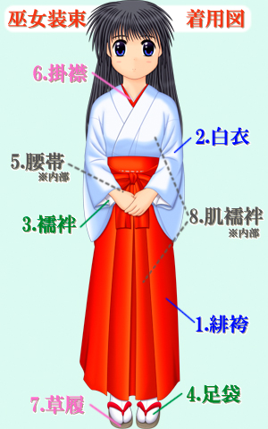

某七把巫女服的穿法整理为两大类：日本近代巫女服的穿法和天朝山寨版巫女服穿法。 为什么这么归类呢？因为天朝网店提供的巫女服只是用来cosplay，追求的是形似，和正规巫女服有区别，每个店的巫女服虽大同小异，又不尽相同，所以亲们尽管百度了“巫女服穿法”，也还是傻傻搞不清楚。某七大致整理了下，希望能有所裨益。但一家之言，难免有瑕疵不足，某七先抛砖引玉，欢迎大家雅正补充~ 自明治维新禁止巫术以后，巫女失去了古代的“灵媒”身份，成为一种辅助性神职人员，但仍保留着神圣、清新、无垢、传统、古典的形象，巫女如花，“立如芍药，坐若牡丹，行犹百合”。在动漫作品中巫女的引用多不胜数，各种角色千差万别，然而，唯一不变的是，巫女往往是古典美的象征。 巫女服一般以红白两色为主，白色象征神圣，红色代表喜庆。地区差异和神社规模所致，巫女服也有其他颜色，略过不表。今天要说的“正规巫女服”，是指日本现代巫女服，桔梗属于动漫角色，她的巫女服是漫画家的原创性以及个人喜好与传统的融合。 穿戴教程
上古时期，巫常氏，全真派就是直接开大，就是灵媒，看起来会有点神经质 现代：一般来说就是打工人（明治维新变法，禁止巫术） 家传： 日本 对应 中国 正一派巫女 对应 正一派道士
袖括り